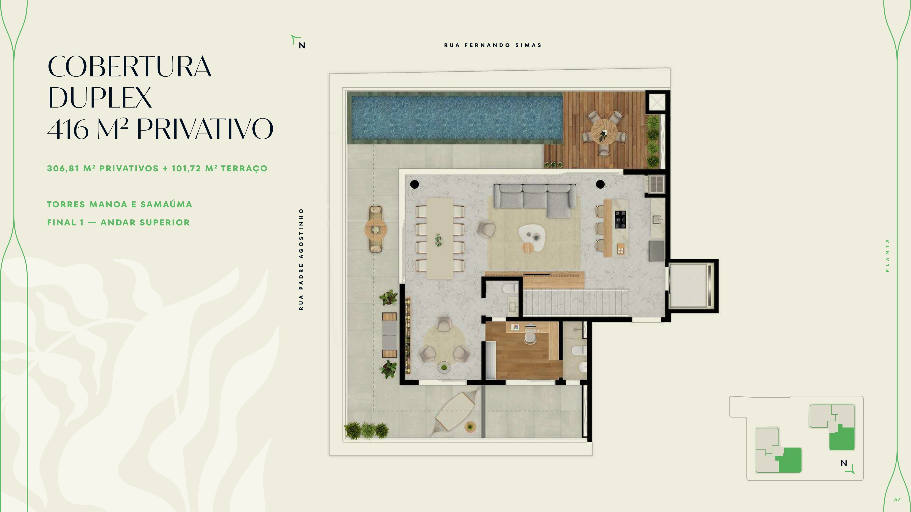
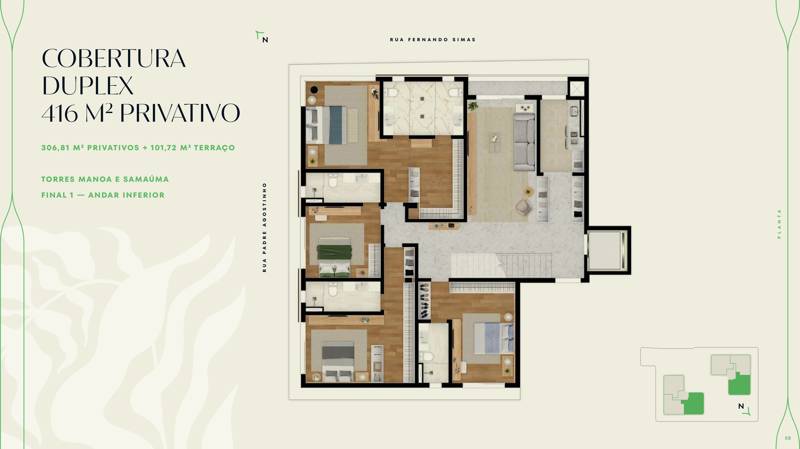

Existe uma floresta dentro de cada um de nós. E é dela que nasce o Amáz — o novo empreendimento da GT Building, em Curitiba.

Localizado no Champagnat, um dos endereços mais valorizados da cidade, a poucos passos do Parque Barigui e do Pátio Batel.

O Amáz compensa 100% do carbono gerado em sua obra através de um projeto real de preservação na Amazônia.


Duas torres, quarenta e cinco unidades, e coberturas duplex de até quatrocentos e dezesseis metros quadrados — com piscina privativa suspensa sobre a cidade.


Espaços pensados por uma equipe premiada — arquitetura, paisagismo e interiores em perfeita harmonia com a natureza.